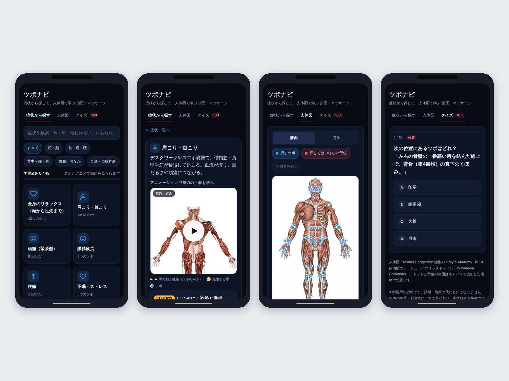

Case Study — Web App / Learning
ツボナビ
症状から探して、人体図で学ぶ指圧学習アプリ
ツボを調べると、名前から引く情報が中心で、「この不調には、どこを、どの順番で、どう押すか」までがつながりにくいと感じました。ツボナビは入口を症状にし、人体図・手順のアニメーション・クイズで、位置と手順と禁忌を一続きで学べるようにしたアプリです。

01 — Background
きっかけと課題
きっかけは、自分や家族の肩こり・頭痛などの不調でした。指圧やマッサージで楽にしたいと思って調べると、ツボの情報は「ツボ名 → 位置 → 効果」の順に並んでいるものが多く、不調を起点に「何を、どの順で、どれくらいの力で押すか」までたどり着くのに手間がかかると感じました。
User
指圧・マッサージを学んでいる人。ツボの位置・適応・禁忌を覚え、手順を自分の手で再現できるようになりたい。
Problem
- 症状から逆引きしにくい
- 文章だけでは位置と押す順番が想像しにくい
- 押してはいけない場所の情報が後回しになりがち
02 — Design Decisions
設計の判断
-
入口を「ツボ名」ではなく「症状」にする
トップを症状の一覧にし、48種のメニューを5つの分類で絞り込めるようにしました。検索は読み仮名でも引けるので「いもたれ」「コムラガエリ」のような言い方でも見つかります。ツボ名から引きたい人のために、部位別のツボ一覧も残しています。
理由学ぶ人が最初に持っているのは「肩がこる」という困りごとで、ツボの名前ではないため。
-
位置は文章ではなく、人体図の上で見せる
前面・背面の筋肉図にツボを重ね、タップでツボ名が出るようにしました。筋肉名の表示も切り替えられます。図はパブリックドメインの Gray's Anatomy（1918年）を使い、前面と背面で着色のテイストをそろえました。
理由「指幅2本分外側」のような文章だけでは、初めての人は位置を思い描けないため。
-
手順は「教科書の図」のようなアニメーションで
症状ごとに、押す順路と押し方をアニメーションで再生します。順路の線は黄色に縁取りを付けて図の上でも見失わないようにし、動きは画面の左側から右側へと一定の向きにそろえました。最初に姿勢と基本ルール（力を抜く・息を止めない・爪を立てない）を示します。
理由位置を覚えても、順番と力加減がわからないと実際には押せないため。
-
安全の情報を、後回しにしない
眼球など押してはいけない8か所を人体図に赤で示し、なぜ危ないかを添えました。骨折直後や外傷の急性期など、施術を避けるべき8つの状態も一覧にし、各メニューの最後には受診の目安を表示します。クイズにも禁忌の問題を13問入れています。
理由体に触れるアプリなので、効果よりも先に「やってはいけないこと」を確実に伝える必要があるため。
-
押して終わりにせず、変化を確かめる
施術の最後に「肩をすくめてストンと落とす」などの確認動作と、楽になったときの目安を表示します。学習面では、位置・適応・症状・禁忌の4範囲から出題するクイズで定着させ、解答数・正答率・要復習の数をこの端末に保存します。
理由やってみた結果を自分で確かめられると、学んだ手順と体の変化が結びつきやすいため。
-
電波がなくても開ける PWA にする
ホーム画面に追加でき、アプリ本体と人体図を端末に保存するので、電波の弱い場所でも開けます。本体は「まずネットから取り、だめなら保存分を使う」読み込み方にして、更新がすぐ届くことと、オフラインで開けることを両立しました。
理由施術する場所は自宅や施術室など、通信が安定しないこともあるため。
03 — Iteration
改善の流れ
初版を出したあと、触りながら次の順に直しました（コミット履歴より）。
- 初版：筋肉図の上にツボと禁忌部位を表示。症状別メニュー、読み仮名検索、クイズ
- 全症状に順路と押し方のアニメーションを追加
- UI/UXの見直し：症状を中心にした情報設計に組み替え、タップでツボ名を表示、教科書形式のアニメーション、施術後の確認項目、オフライン対応
- 「全身のリラックス（頭から足先まで）」を追加：1日の終わりに通しでできるコース
- 順路の線を黄色＋縁取りに：図の上で線が埋もれないように
- 足裏・頭の解剖図タブを試して、元に戻す
- 背面の人体図を前面と同じ着色にそろえる
- 全身コースの拡充：順路を左側から滑らかに、再生ボタンと読み込み表示を改善
04 — Next
次にやること
まだ実際の利用者に使ってもらった検証はしていません。次は次の順で確かめる予定です。
- 学習者に使ってもらう指圧を学んでいる人に「症状を選んで、手順どおりに押す」まで操作してもらい、迷う場所を記録する
- クイズの結果を見る正答率の低い範囲を調べ、説明や図の見せ方を直す
- 安全表示の伝わり方を確かめる禁忌の赤い表示が、施術前に確実に目に入っているかを確認する
05 — Tech